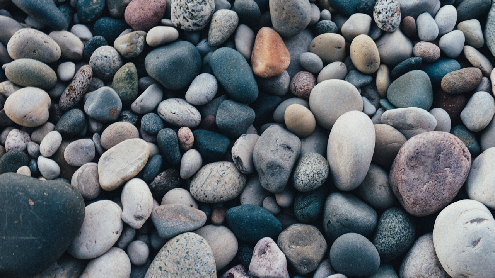
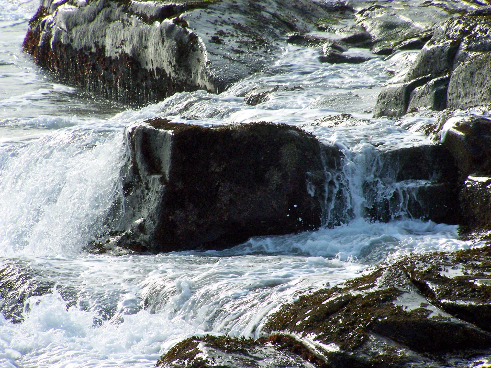
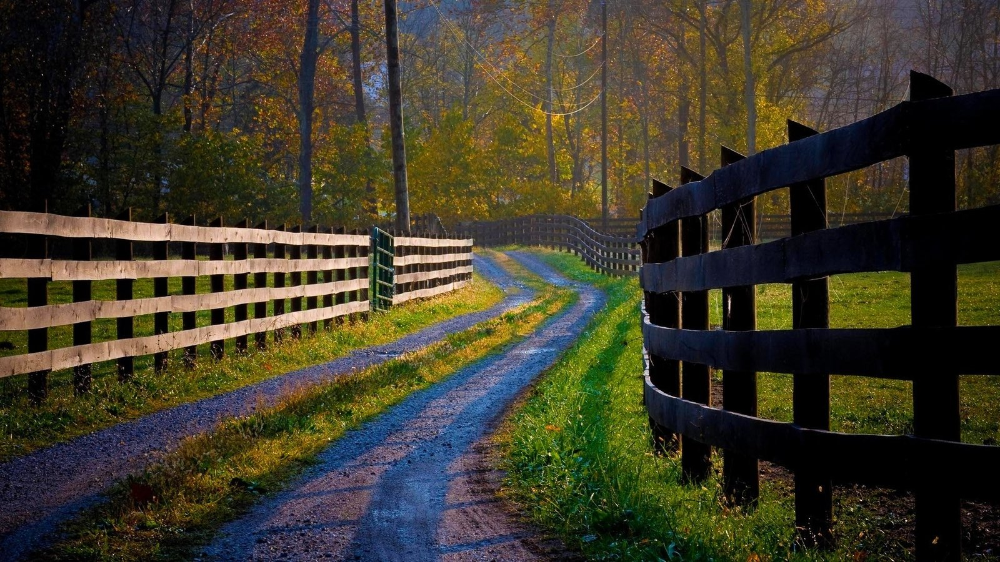
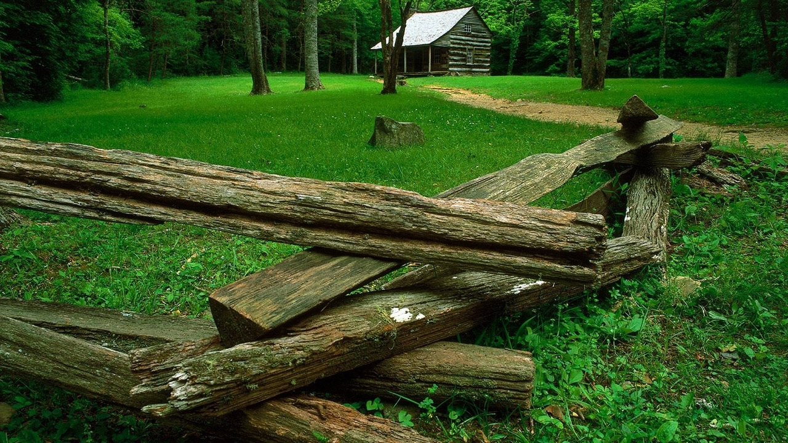
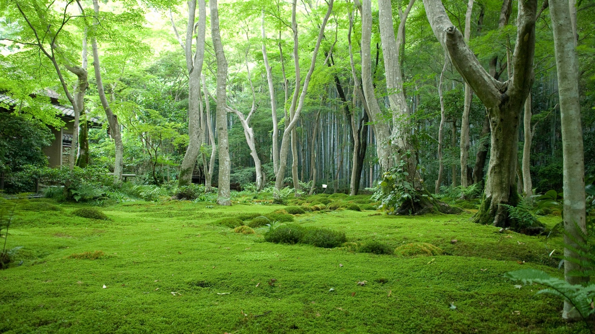
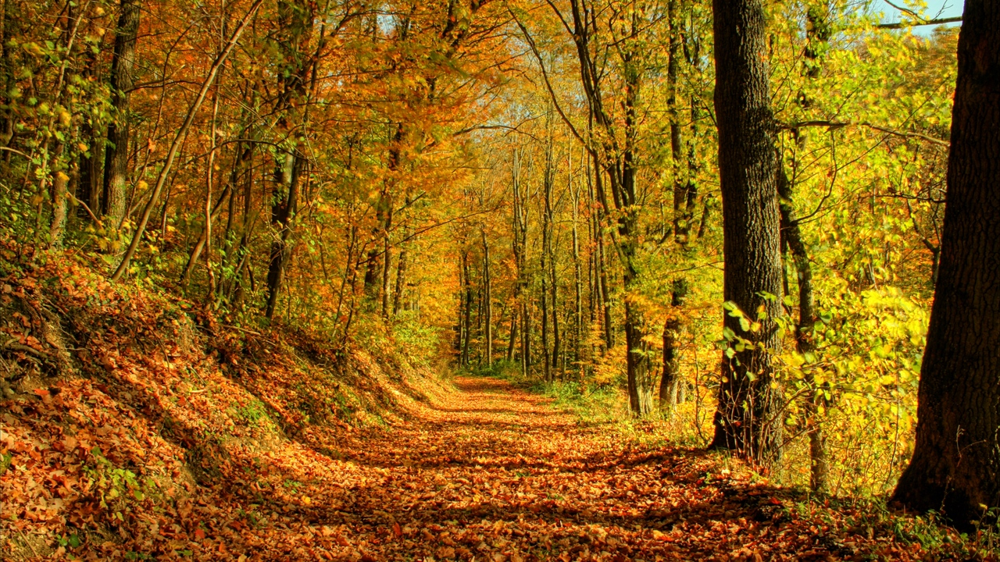
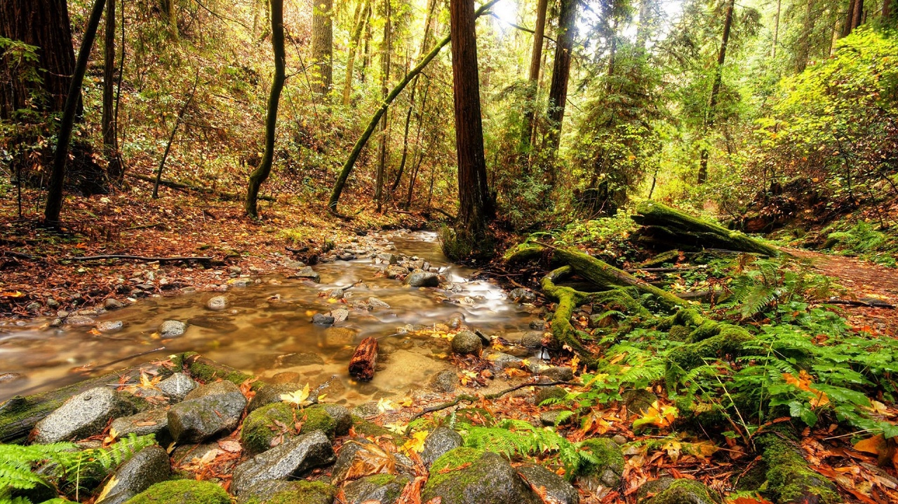
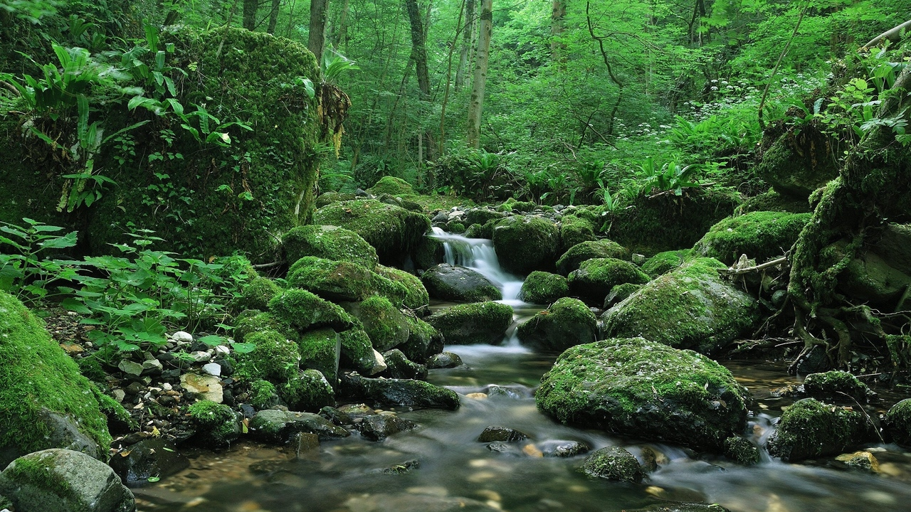

Agriculture Le patrimoine agricole
Dans la ville X, les principales cultures pratiquées sont les suivantes :
- Cultures pérennes : cacaoyer, caféier arabica, caféier robusta, palmier à huile. Le caféier est présent dans 88%, le cacaoyer dans 40% et le palmier à huile dans 7%des quartiers enquêtés
- Cultures vivrières : maïs, haricot, manioc, taro, macabo, igname, arachide, pomme de terre, soja, patate douce, banane, plantain et le riz.Caféier Cacaoyer Palmier à huile
- Cultures maraîchères : tomate, choux, légumes, pastèque, oignon, aubergine, gombo, poireau, condiments verts, et piment.
- Arbres fruitiers : avocatier, safoutier, manguier, oranger, pamplemoussier, ananas, goyavier, corossolier, fruits noirs, papayer et kolatier, les principales





Elevage La valorisation des produits de notre commune
Les systèmes d’élevage dans la commune sont divisés en trois grandes catégories:
- Les pasteurs transhumants qui possèdent de grands troupeaux de bétail. Ils pratiquent le système extensif d’élevage, déplacent les animaux d’une région à l’autre en fonction de la disponibilité des pâturages. Pendant les périodes sèches, tous les animaux, sauf les plus jeunes sont déplacés vers des zones de transhumance vers le Noun, Mbam et Inoubou, Sanaga, Nde (Ngnokong) ;
- Les agriculteurs sédentaires, qui ont l’élevage comme activité secondaire à l’agriculture. Ce groupe dans la plupart des cas élèvent les porcs, les chèvres, les moutons et les volailles dans leurs arrière-cours comme source alternative de revenu. Certains dans ce groupe pratiquent le système intensif pendant que les autres laissent les animaux en divagation
- Les agropasteurs semi-sédentaires qui se trouvent entre les catégories I et II.
Aller à la page


